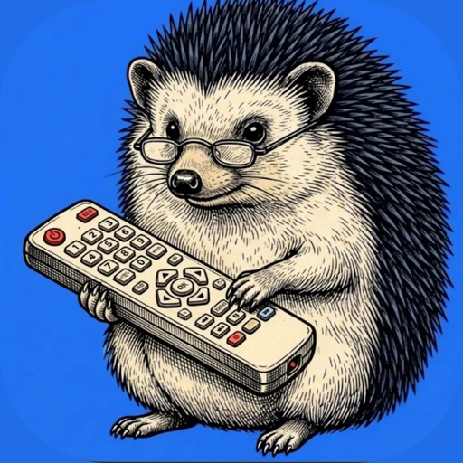

404 / Not found
This page went looking for a better remote.
The address does not exist — or it moved while you were reading. Nothing is lost: the apps are one click away.

404 / Not found
The address does not exist — or it moved while you were reading. Nothing is lost: the apps are one click away.
